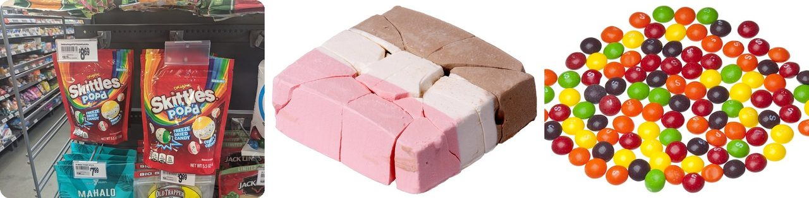
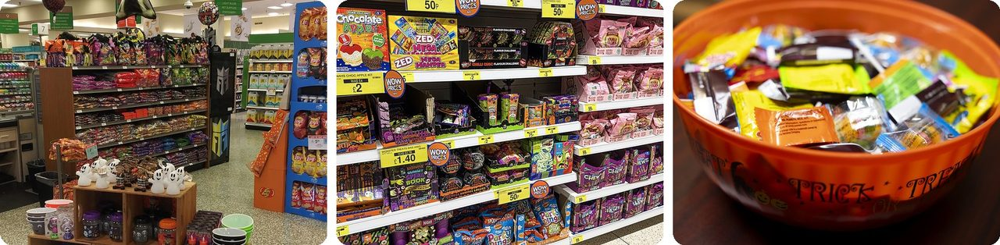
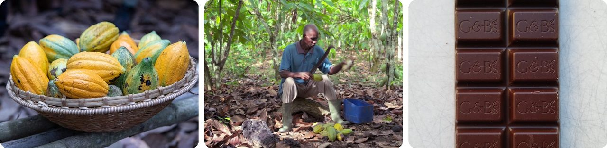
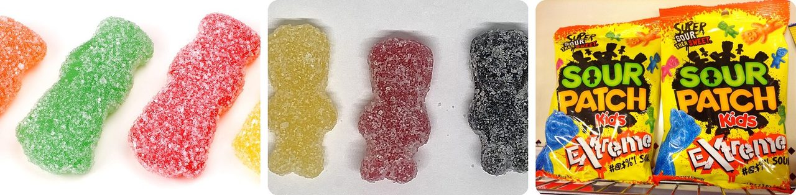
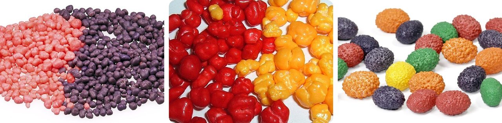
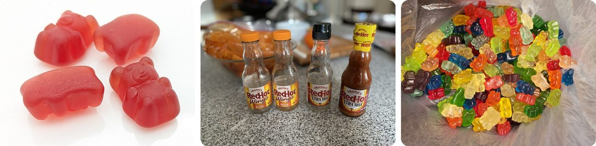
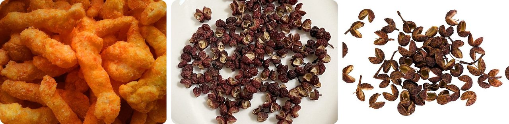
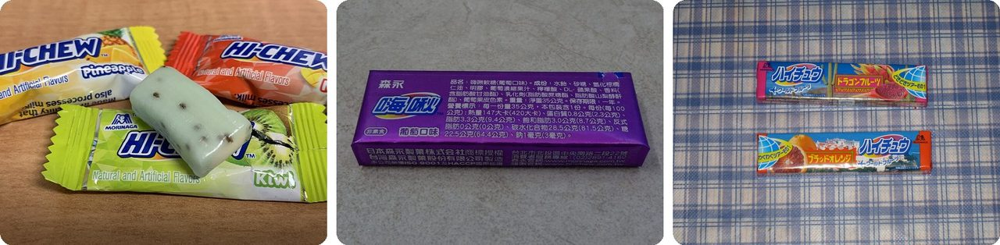
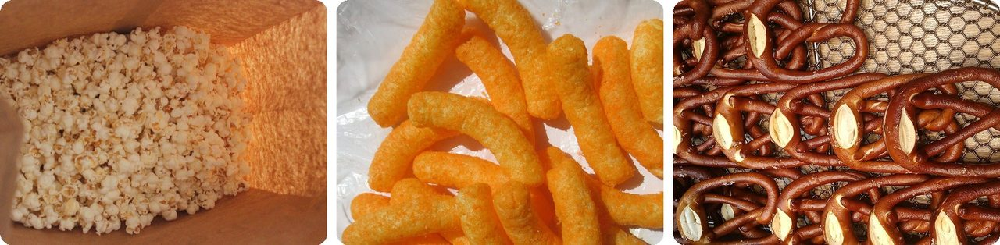
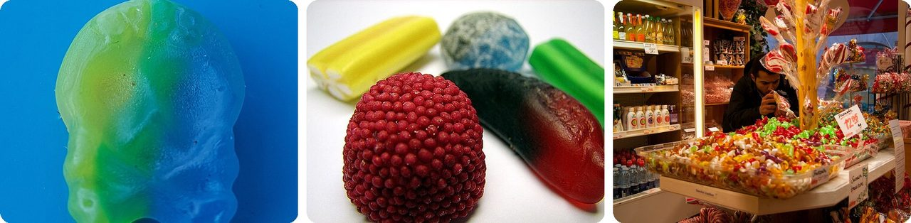

🌍 Top 10 Weird Halloween Candy Trends of 2026
Oct 25, 2026
1. 🧊 Freeze-dried Skittles crunch instead of chew

This Halloween, Mars is selling Skittles POP'd Creepy Crunch, a freeze-dried version of Skittles. Instead of chewy, they're crunchy and airy.Here's how freeze-drying works: the candy is frozen → the air pressure around it is lowered → the frozen water inside turns straight into vapor and floats away, without ever melting. What's left is dry and crispy but keeps its shape.
Freeze-dried candy took off in the U.S. in 2020 thanks to social media, and Skittles launched its own in 2024. It fits what people say they want: one UK candy maker found that about 7 out of 10 people say texture decides how much they enjoy a candy.
Think of it as a Skittle that got turned into a crunchy little cloud.
2. 🗓️ Halloween candy now gets announced in May

Mars has its own holiday called "Halfway to Halloween." In 2026 it fell on May 6, exactly six months before October 31, and that's when the company showed off this year's Halloween candy.The lineup is huge: more than 120 items, including over 60 variety bags holding anywhere from 15 to 350 pieces. New this year are Twix shaped like skulls and Snickers shaped like pumpkins.
The candy then started showing up in stores over the summer, months before anyone puts on a costume.
Basically, Halloween now gets a half-birthday.
3. 🍫 Chocolate got 14% pricier this year

According to U.S. government price data from September, chocolate costs 14% more than a year ago, on top of a 7.8% jump in 2025. A bag that cost $5 in 2024 would now cost about $6.15.Candy and gum overall went up 7.7%, while everything else people buy rose only 3.7%. As one candy shop owner put it, chocolate "has taken a bigger hit than the sugar candy."
Chocolate starts as cocoa beans that grow in pods on trees, and West Africa grows about 81% of the world's supply. Ivory Coast alone grew 38% in 2024.
In other words, chocolate is turning into the fancy candy in the bowl.
4. 🍋 Sour Patch Kids tied M&M's for the most states won

CandyStore.com's 2026 Halloween ranking, built from 18 years of sales data, still has M&M's as the top candy overall. But Sour Patch Kids came in second and tied M&M's by winning 10 states each.Seven states switched from a chocolate favorite to a non-chocolate one. Florida swapped Reese's for Skittles, and Arizona traded Hershey's Kisses for Sour Patch Kids.
The trick is the coating: a mix of sugar plus citric and tartaric acids (the sour stuff in lemons and grapes) gives a sharp, sour blast → then the soft gummy underneath tastes sweet.
It's a candy that slaps you, then gives you a hug.
5. 🍬 Nerds Gummy Clusters crashed the top 5

Nerds Gummy Clusters made their first appearance in CandyStore.com's national ranking at number 5, and they were the top candy in Indiana.Nerds have been around since 1982, but for decades they were just an ordinary candy. Then the Gummy Clusters came out in 2020.
In 2021, Kylie Jenner showed them to her 200 million Instagram followers, and they went viral. A Super Bowl ad in 2024 kept the buzz going.
Basically, a 1980s candy got a glow-up and became cool again.
6. 🌶️ Gummy bears are getting spicy

"Swicy" (sweet plus spicy) is one of 2026's big candy trends. Hot sauce brand Frank's RedHot teamed up with candy maker Huer on Spicy Gummy Bears: cherry, pineapple and mango gummies dusted with Frank's seasoning of cayenne pepper and a hint of garlic.They're sold in stores across the U.S. and Canada. Skittles joined in too, with Skittles Gummies Fuego, gummies covered in a tangy chile coating.
Frank's RedHot has been around since 1920 and is a mild hot sauce: even its extra-hot version is milder than Tabasco. So these gummies are more of a warm tingle than a fire alarm.
It's a fruit snack that brought its own hot sauce.
7. 🥵 Cheetos made puffs that numb your mouth

Cheetos teamed up with Blumhouse, a horror movie studio, on Halloween puffs called Sweet Phantom Heat. They start out tasting like cinnamon sugar → then the heat slowly builds.The spooky part comes from an idea borrowed from Sichuan pepper, a Chinese spice. Its natural chemical makes your mouth tingle and go numb, like a buzz at about 50 vibrations every second.
Everyone reacts differently. Some reviewers said the puffs tasted like French toast sticks and weren't very spicy, while one grimaced for about 30 minutes.
Think of it as a snack that turns your tongue into a phone on vibrate.
8. 🇯🇵 Hi-Chew hid a mystery flavor in a plain white chew

Hi-Chew's Halloween Mystery Mix has Green Apple, Orange Creamsicle and Cotton Candy, plus one secret flavor disguised as a plain all-white chew. You have to taste it to guess.Hi-Chew comes from Morinaga, a Japanese candy company, and has been around since 1975. Its texture sits somewhere between chewing gum and soft taffy, and it has come in more than 170 flavors.
It was invented as gum you could swallow. In Japan it was considered rude to take food out of your mouth in public, so the company wanted a chewy candy you never had to spit out.
It's a candy pop quiz you get to eat.
9. 🍿 Hershey is handing out popcorn and pretzels

This Halloween, Hershey, the chocolate company, added popcorn, cheese puffs and pretzels to its trick-or-treat lineup, from brands like SkinnyPop, Pirate's Booty and Lesser Evil.Part of the reason is the growing popularity of GLP-1 weight-loss drugs, along with more people trying to eat healthier. Hershey's zero-sugar candy, mint and gum business grew about 4.3 times bigger from 2020 to 2025.
Candy is far from finished, though. Early-season sales of snack-size bags of chocolate and candy were up by double digits compared with last year.
In other words, some trick-or-treat bags now look like a movie night.
10. 🇸🇪 Swedish sour skulls are going viral

Swedish candy is having a moment: people are discovering it on TikTok, in specialty shops and online. One seller of Swedish candy expects Halloween 2026 to be all about texture, sour flavors and seasonal shapes like sour skulls.Sweden has a famous candy habit called lördagsgodis, "Saturday candy." It started in 1959 as a health tip: after studies on sugar and tooth decay, Swedes were advised to save candy for once a week.
Over time, the tip turned into a tradition, and now kids and grown-ups alike treat Saturday as candy day.
It's a once-a-week candy party that went worldwide.
Fun fact
The crunchy "astronaut ice cream" sold in museum gift shops is freeze-dried, just like this year's crunchy Skittles. It was developed by Whirlpool for NASA's Apollo missions to the Moon. But here's the twist: it was never actually eaten on any Apollo mission. Next time: the strangest foods astronauts really eat in space.
Photo credits (Wikimedia Commons)
- #1: Skittles Pop'd (flickr) by pokemonprime, CC BY 2.0
- #1: Freeze-Dried-Ice-Cream.jpg by Evan-Amos, Public domain
- #1: Skittles-Candies-Pile.jpg by Evan-Amos, Public domain
- #2: Halloween displays in a Publix in Clearwater, Florida, Sep 2020.jpg by MatthewHoobin, CC BY-SA 4.0
- #2: Close-up view of novelty candy, Halloween-themed toys, and confectionery displays in toy aisle at B&M discount store, 134-142 High Street, Gillingham, Kent, England.jpg by Own work, taken with an iPhone 14 Pro., CC BY-SA 4.0
- #2: Halloween Candy Bowl (flickr) by Alabama Extension, CC0
- #3: Cocoa pods in Soubré.jpg by Milequem Diarassouba, CC BY-SA 4.0
- #3: Breaking open cocoa pods in Ivory Coast.png by CIRAD, CC BY 3.0
- #3: Green and Black's dark chocolate bar 1.jpg by Mx. Granger, CC0
- #4: Sour-Patch-Kids.jpg by Evan-Amos, CC0
- #4: Sour patch kids aug 21.jpg by Secretlondon, CC BY-SA 4.0
- #4: Sour Patch Kids (flickr) by JeepersMedia, CC BY 2.0
- #5: Nerds-Candies.jpg by Evan-Amos, Public domain
- #5: Nerds.jpg by Scott Ehardt, Public domain
- #5: Giant-Chewy-Nerds.jpg by Evan-Amos, Public domain
- #6: Shameless Snacks gummy bears.jpg by Mx. Granger, CC0
- #6: Frank's RedHot (flickr) by Flying Puffin, CC BY-SA 2.0
- #6: Gummy Bears (52766386012).jpg by Justin Coury, CC BY-SA 2.0
- #7: Cheetos (5351536717).jpg by Mr. Brian from Kagoshima CIty, JP, CC BY 2.0
- #7: Sichuan pepper.jpg by Matt K, CC BY-SA 4.0
- #7: Poivre fond blanc.jpg by Didier Descouens, CC BY-SA 4.0
- #8: Hi-Chew.jpg by EnzoTC, CC BY-SA 4.0
- #8: Taiwan Morinaga Hi-Chew grape flavor 35g 20160302.jpg by Solomon203, CC BY-SA 4.0
- #8: New Hi-Chew flavors (flickr) by Wallslide, CC BY 2.0
- #9: popcorn in a paper bag (flickr) by PersonalCreations.com, CC BY 2.0
- #9: Cheetos puffs 한국어A.jpg by unknown, CC BY-SA 4.0
- #9: Pretzels🎀🥨.jpg by Fumikas Sagisavas, CC0
- #10: Vinnarskalle.jpg by Lokal_Profil, CC BY-SA 4.0
- #10: Losgodis.jpg by Daniel Mott, CC BY-SA 2.5
- #10: Candy shop in Sweden (8272685597).jpg by Guillaume Speurt from Vilnius, Lithuania, CC BY-SA 2.0


.jpg){kind=link}
.jpg){kind=link}


.jpg){kind=link}